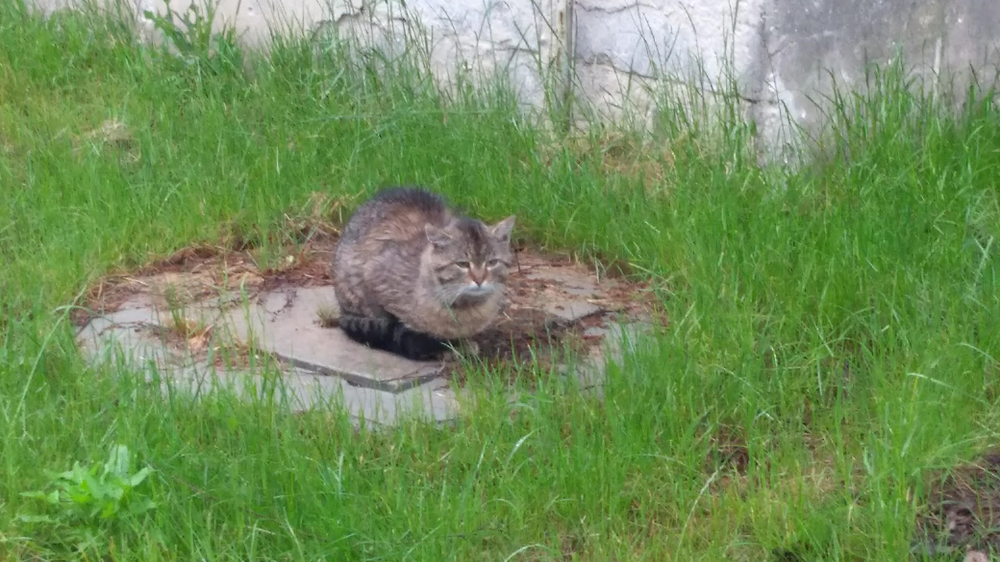

DRUGA STRONA JOANNY NOWAK
Będzie lepsza niż pierwsza.
Więcej osób ją zobaczy.
Również będzie trochę o kotach.
Będzie o wszystkim i o niczym. ;)
Tabela 1. Rodzaje kotów
Kot 1
Kot 2
Kot 3
normalny
łasicowaty
puszysty

Jak wygląda kot puszysty?
Kliknij aby się przekonać
Chcesz poczytać o kotach
kliknij!